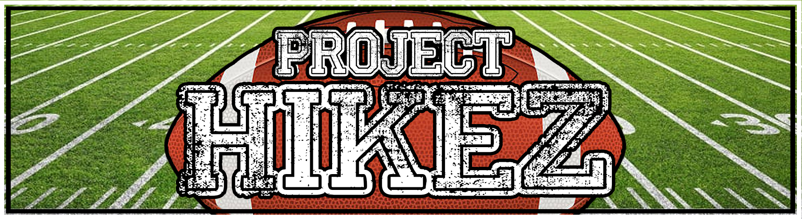

Project Hikez

Project Hike is a Virtual Reality game that aims to give an NFL Madden-like experience in VR.
In Project Hike, you are the owner and quarterback for your team; build your team, create your playbook, choose your next plays and challenge your opponents in tournaments.
The NPC (non-player characters) players in Project Hike can be created and trained, traded, or sold. The players that are created are powered by artificially intelligent algorithms that learn and adapt to your play style and liking. Spend time training them up for game-time.
Here's the thing, the players you pick up or create are NFTs (non-fungible tokens) that are designed with digital scarcity in mind, such that each player is individually owned and ownership is able to be traded or sold amongst other team owners. Ownership of the NFTs are saved on a blockchain and can be traded on decentralized exchanges with other team owners from across the world. Making the players more like adaptable trading cards that you play with.
Once your team is built out and you believe that your skills are up to par, play in worldwide tournaments against other team owners with customized teams. Tournaments are held periodically with various entry requirements from skill level to money buy-in (rewards distributed). Gain skill points, money, or play for a new and shiny player as tournament rewards.
Create - Create your own plays and save them in your playbook
Train - NPCs have individual skill levels and attributes
Trade - Buy/Sell/Trade amongst other players from around the world
Build - Collect your perfect team for your playing own style
Challenge - Practice or Play against others in multiplayer tournaments or quick-play against friends
Welcome to Project Hike, do you have what it takes to become the G.O.A.T (Greatest Of All Time).